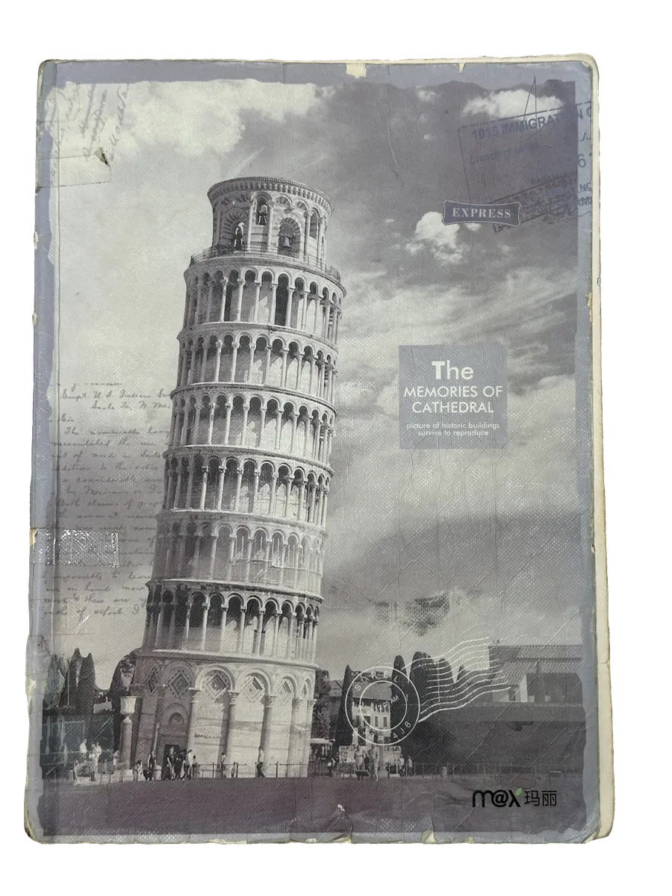
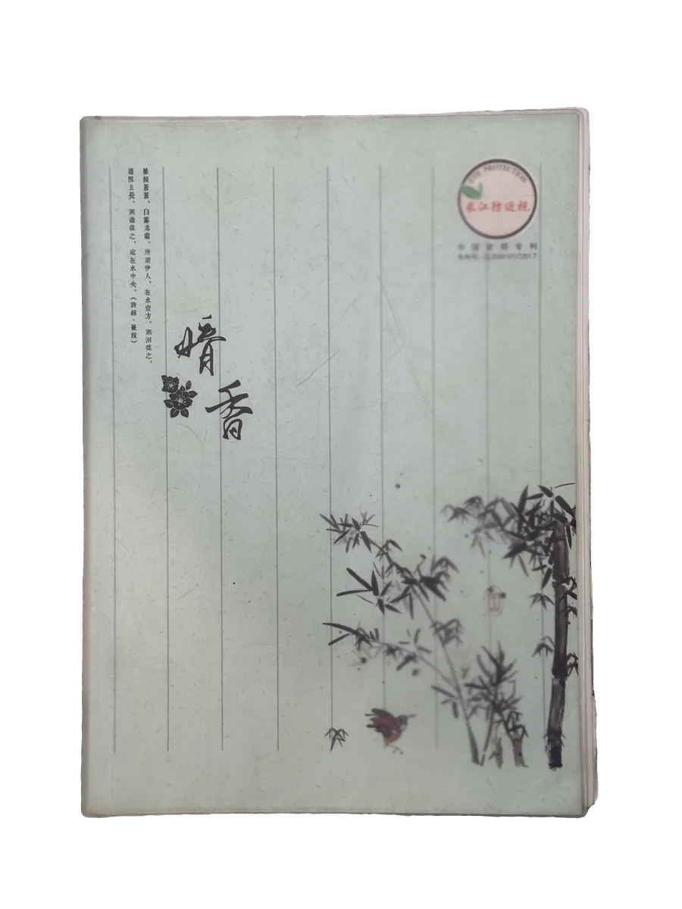

Class 11 · Diary
每天的值日班长在讲台上写下一段话。
——两本笔记本，二百一十八页。


Class 11 · Diary
每天的值日班长在讲台上写下一段话。
——两本笔记本，二百一十八页。
Colophon
第一页上写着「2019 二(11)班 观察日记」。两本笔记本，一本印着比萨斜塔， 一本题着「暗香」；内页按拍摄顺序排列，未做删改，也没有转录—— 照片就是原件。
全站是纯静态页面，可以直接托管在 GitHub Pages。